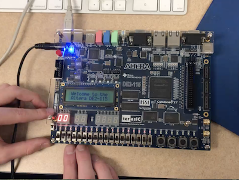

This project was assigned as the final test for Computer Organization, which all CS major must take.
I worked on this project with Aidan Shea, my lab partner.
We had to write the code in Verilog and then upload it to the board you see in the picture.

How it works
An internal clock (which we had to program to be slow enough to be visible) sends out a pulse to increment a counter variable. Every tine it incrememnts, the program goes through a LONG chain of if/else if statemments to update the 8-but display.
We also made a custom variable for step size and step direction, which are operated by those switches, to add more functionailty. You can pause and reset the exact value the counter is set at, so it actually works as a stopwatch!